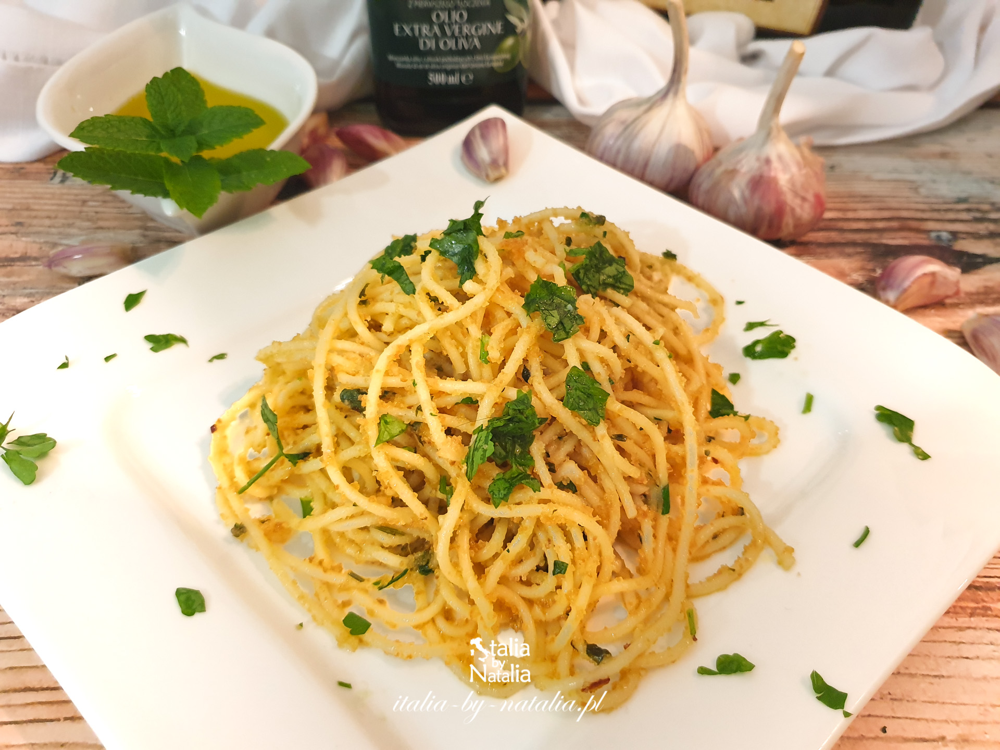

Aglio e olio

Italian aglio e olio!
Ingredients:
- 1 pound uncooked spaghetti
- 6 cloves garlic, thinly sliced
- ½ cup olive oil
- ¼ teaspoon red pepper flakes, or to taste
- salt and freshly ground black pepper to taste
- ¼ cup chopped fresh Italian parsley
- 1 cup finely grated Parmigiano-Reggiano cheese
Steps:
- Bring a large pot of lightly salted water to a boil. Cook spaghetti in the boiling water, stirring
occasionally until cooked through but firm to the bite, about 12 minutes. Drain and transfer to a pasta
bowl.
- Combine garlic and olive oil in a cold skillet. Cook over medium heat to slowly toast garlic, about 10
minutes. Reduce heat to medium-low when olive oil begins to bubble. Cook and stir until garlic is golden
brown, about another 5 minutes. Remove from heat.
- Stir red pepper flakes, black pepper, and salt into the pasta. Pour in olive oil and garlic, and sprinkle on
Italian parsley and half of the Parmigiano-Reggiano cheese; stir until combined.
- Serve pasta topped with the remaining Parmigiano-Reggiano cheese.